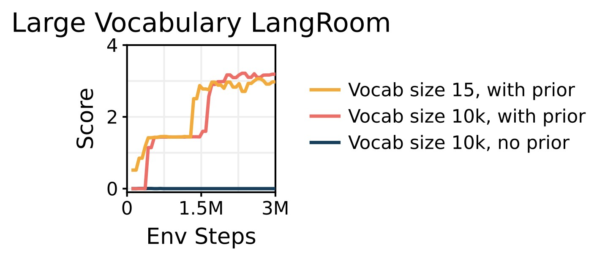

The highest score is reached by what approach?

The highest score is reached by what approach?

<think>
Okay, let's see. The question is asking which approach reaches the highest score. The graph has three lines: orange (Vocab size 15, with prior), red (Vocab size 10k, with prior), and blue (Vocab size 10k, no prior). I need to check where each line peaks.
Looking at the y-axis, the scores go up to around 4. The red line (10k with prior) starts lower than the orange one but after about 1.5 million steps, it seems to climb higher. Wait, actually, the orange line (vocab 15, with prior) stays around 3 maybe? The red line goes up a bit higher. Let me check again.
At the beginning, both orange and red lines start low. The orange (15 vocab) rises more steeply initially but then plateaus. The red line (10k with prior) catches up around 1.5M steps and then keeps going higher. By 3M steps, the red line's score is the highest among all three. The blue line is almost flat near zero, so it's not competitive.
Wait, the orange line (vocab 15) has a peak around 3.5 maybe? But the red line (10k with prior) is above that. Let me confirm the values. At Env Steps=3M, the red line is slightly higher than orange. The peak of the red line seems to stabilize around 3.2-3.4, while orange is maybe around 3.0. So red line (Vocab size 10k, with prior) has the highest score. The blue line remains low. Therefore, the approach with the highest score is "Vocab size 10k, with prior."
</think>
<answer>
The graph displays three approaches' performance over environment steps (x-axis) with their scores (y-axis):
- **Orange line**: Vocab size 15, with prior (starts rising early but plateaus around ~3.0 score).
- **Red line**: Vocab size 10k, with prior (initially lower than orange, catches up around 1.5M steps and stabilizes at the highest score, peaking near ~3.3–3.4).
- **Blue line**: Vocab size 10k, no prior (remains near 0 throughout, negligible performance).
By 3M environment steps, the red line (Vocab size 10k, with prior) consistently maintains the highest score compared to the other two approaches.
\boxed{Vocab size 10k, with prior}
</answer>